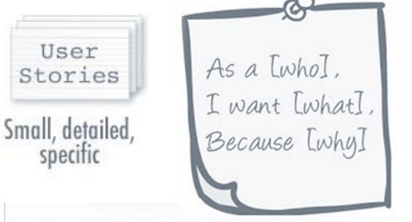

Histórias de Usuários
Introdução
Este documento refere-se as Histórias de Usuários, documentação exigida sobre Modelagem no projeto de requisitos de software pelo grupo 5 para explicar de forma clara e concisa as funcionalidades e os requisitos necessários do envolvidos no aplicativo Sinesp Cidadão
Metodologia
Este documento foi produzido com base nos requisitos elicitados com persona presentes no Three Level Scale para o levantamento das histórias de usuário que sequem a seguinte estrutura da tabela 1 e figura 1 [1].
Figura 1: Estrutura da descrição

Fonte: SERRANO M.; SERRANO M. Requisitos - Aula 15.
Tabela 1 - Estrutura das Histórias de Usuários
| identificador da histório | caraterísticas |
|---|---|
| Título | Nome da História de Usuário auto-explicativo |
| Descrição | Descreve "quem", "o que" e o "por que" da funcionalidade |
| Critérios de aceitação | Condições que devem ser atendidas para que a história seja considerada completa e aceita |
Autor: Christian
Validação
A validação das histórias de Usuários foi feita com o uso de personas com a gravação disponível no seguinte link: gravação
Histórias de Usuários identificados
Abaixo nas tabelas de 1 a 41 podem ser visto as Histórias de Usuários .
Tabela 2 - História de Usuário Autenticação de Usuário
| HU01 | características |
|---|---|
| Título | Autenticação de Usuário |
| Descrição | Como um usuário do aplicativo Sinesp Cidadão, eu quero poder fazer login utilizando o Governo Federal (Gov) como método de autenticação, para acessar de forma segura as funcionalidades exclusivas do aplicativo. |
| Critérios de aceitação | - O usuário deve ter a opção de selecionar o método de autenticação pelo Gov ao iniciar o processo de login. - Após selecionar o Gov como método de autenticação, o usuário deve ser redirecionado para a página de login do Gov. - Após autenticar com sucesso no Gov, o usuário deve ser redirecionado de volta para o aplicativo Sinesp Cidadão. - O usuário deve ser autenticado com sucesso no aplicativo Sinesp Cidadão após retornar do Gov, permitindo o acesso às funcionalidades do aplicativo. |
Autor: Christian Hirsch Santos
Tabela 3 - História de Usuário Busca por Veículo
| HU02 | características |
|---|---|
| Título | Busca por Veículo |
| Descrição | Como um usuário do aplicativo Sinesp Cidadão, eu quero poder buscar informações sobre um veículo utilizando a placa, para obter detalhes sobre o mesmo. |
| Critérios de aceitação | - O usuário deve ter a opção de inserir a placa do veículo na barra de busca. - Após inserir a placa e confirmar a busca, o sistema deve exibir as informações disponíveis sobre o veículo. - As informações exibidas devem incluir a situação atual do veículo, indicando se está registrado como roubado ou furtado. |
Autor: Christian Hirsch Santos
Tabela 4 - História de Usuário Adicionar carro como roubado
| HU03 | características |
|---|---|
| Título | Adicionar carro como roubado |
| Descrição | Como um usuário do aplicativo Sinesp Cidadão, eu quero ter a opção de informar dados sobre um veículo roubado , para contribuir com o banco de dados e auxiliar na identificação de veículos roubados ou furtados. |
| Critérios de aceitação | - O usuário deve ter a opção de preencher um formulário com os dados do veículo, como modelo, cor e marca. - Após preencher os dados do veículo, o usuário deve ter a opção de enviar as informações para o sistema. - O sistema deve receber e armazenar as informações do veículo de forma segura e precisa no banco de dados. - Após enviar as informações, o usuário deve receber uma confirmação de que os dados foram registrados com sucesso. |
Autor: Christian Hirsch Santos
Tabela 5 - História de Usuário Listar Pessoas Desaparecidas
| HU04 | características |
|---|---|
| Título | Listar Pessoas Desaparecidas |
| Descrição | Como um usuário do aplicativo Sinesp Cidadão, eu quero ter a opção de visualizar uma lista de pessoas desaparecidas, para auxiliar na busca e localização de indivíduos desaparecidos. |
| Critérios de aceitação | - O usuário deve ter a opção de acessar a seção de pessoas desaparecidas no menu principal do aplicativo. - A lista de pessoas desaparecidas deve ser exibida de forma a mostrar a foto e o nome da pessoa desaparecida. - Cada entrada na lista deve possibilitar seu selecionamento para obter mais informações. |
Autor: Christian Hirsch Santos
Tabela 6 - História de Usuário Fornecer Informações Gerais sobre Desaparecidos
| HU05 | características |
|---|---|
| Título | Fornecer Informações Gerais sobre Desaparecidos |
| Descrição | Como um usuário do aplicativo Sinesp Cidadão, eu quero ter acesso a informações gerais sobre desaparecidos, como idade, tamanho, foto para a identificação do desaparecido |
| Critérios de aceitação | - O usuário deve ter a opção de acessar a seção de informações gerais sobre desaparecidos ao selecionar a pessoa especifica na aba de desaparecidos. - As informações gerais devem ser atualizadas diariamente. |
Autor: Christian Hirsch Santos
Tabela 7 - História de Usuário Vincular ao Desaparecido
| HU06 | características |
|---|---|
| Título | Vincular ao Desaparecido |
| Descrição | Como um usuário do aplicativo Sinesp Cidadão, eu quero ter a opção de vincular ao perfil uma pessoa desaparecida, para ajudar na centralização e organização das informações relacionadas ao cada caso e receber notificações de atualizações sobre ele. |
| Critérios de aceitação | - O usuário deve ter a opção de acessar o perfil de uma pessoa desaparecida. - Após acessar o perfil, o usuário deve ter a opção de vincular a pessoa desaparecida ao seu perfil. - O sistema deve registrar e notificar as informações vinculadas ao perfil da pessoa desaparecida . - O usuário deve poder visualizar todas as ocorrências e informações vinculadas ao seu perfil na aba de vínculos. |
Autor: Christian Hirsch Santos
Tabela 8 - História de Usuário Vincular ao Carro
| HU07 | características |
|---|---|
| Título | Vincular ao Carro |
| Descrição | Como um usuário do aplicativo Sinesp Cidadão, eu quero ter a opção de vincular ao perfil um veículo , para ajudar na identificação e localização do veículo e receber notificações de atualizações sobre ele. |
| Critérios de aceitação | - O usuário deve ter a opção de buscar o veículo . - Após buscar pelo veículo, o usuário deve ter a opção de vincular o veículo ao seu perfil. - O sistema deve registrar e notificar sobre atualizações das informações do veículo vinculo . - O usuário deve poder visualizar todas as ocorrências e informações vinculadas ao seu perfil na aba de vínculos. |
Autor: Christian Hirsch Santos
Tabela 9 - História de Usuário Buscar por Mandados
| HU08 | características |
|---|---|
| Título | Buscar por Mandados |
| Descrição | Como um usuário do aplicativo Sinesp Cidadão, eu quero ter a opção de buscar informações sobre mandados de prisão, para auxiliar na identificação e captura de indivíduos julgados pela justiça. |
| Critérios de aceitação | - O usuário deve ter a opção de acessar a seção de busca por mandados no menu principal do aplicativo. - O usuário deve poder pesquisar por mandados utilizando critérios como nome do procurado, número do mandado ou tipo de crime. - O usuário deve poder visualizar detalhes adicionais sobre cada mandado ao selecionar um resultado da busca. |
Autor: Christian Hirsch Santos
Tabela 10 - História de Usuário Fornecer Informações sobre Mandados
| HU09 | características |
|---|---|
| Título | Fornecer Informações sobre Mandados |
| Descrição | Como um usuário do aplicativo Sinesp Cidadão, eu quero ter acesso a informações detalhadas sobre mandados de prisão, para entender os motivos pelos quais os indivíduos estão sendo julgado pela justiça. |
| Critérios de aceitação | - O usuário deve ter a opção de acessar a seção de informações sobre mandados no menu principal do aplicativo. - O usuário deve poder acessar informações adicionais sobre cada mandado ao selecionar um item na lista. - As informações sobre mandados devem ser apresentadas explicando os detalhes dos crimes pelos quais os indivíduos estão sendo procurados(Sentença, Expedição,Peça). |
Autor: Christian Hirsch Santos
Tabela 11 - História de Usuário Buscar por Procurados
| HU10 | características |
|---|---|
| Título | Buscar por Procurados |
| Descrição | Como um usuário do aplicativo Sinesp Cidadão, eu quero ter a opção de buscar informações sobre indivíduos procurados pela justiça, para contribuir com a identificação e captura dessas pessoas. |
| Critérios de aceitação | - O usuário deve ter a opção de acessar a seção de busca por procurados no menu principal do aplicativo. - O usuário deve poder visualizar detalhes adicionais sobre cada procurado ao selecionar uma foto em especifico |
Autor: Christian Hirsch Santos
Tabela 12 - História de Usuário Fornecer Informações sobre Procurados
| HU11 | características |
|---|---|
| Título | Fornecer Informações sobre Procurados |
| Descrição | Como um usuário do aplicativo Sinesp Cidadão, eu quero ter acesso a informações detalhadas sobre indivíduos procurados pela justiça, para entender os motivos pelos quais eles estão sendo procurados e contribuir com o processo de captura. |
| Critérios de aceitação | - O usuário deve poder acessar informações adicionais sobre cada mandado ao selecionar um item na lista. - As informações sobre mandados devem ser apresentadas explicando os detalhes dos crimes pelos quais os indivíduos estão sendo procurados(Sentença, Expedição,Peça). |
Autor: Christian Hirsch Santos
Tabela 13 - História de Usuário Sair do Aplicativo
| HU12 | características |
|---|---|
| Título | Sair do Aplicativo |
| Descrição | Como um usuário do aplicativo Sinesp Cidadão, eu quero ter a opção de sair do aplicativo , para encerrar a sessão e proteger meus dados pessoais. |
| Critérios de aceitação | - Ao selecionar a opção de sair, o sistema deve encerrar a sessão do usuário e retornar à tela de login. - O usuário deve ser informado de que a sessão foi encerrada com sucesso e de que ele está desconectado do aplicativo. - Após sair do aplicativo, o usuário não deve ter acesso às funcionalidades ou informações pessoais sem efetuar login novamente. |
Autor: Christian Hirsch Santos
Tabela 14 - História de Usuário Anunciar Perturbação da Vizinhança
| HU13 | características |
|---|---|
| Título | Anunciar Perturbação da Vizinhança |
| Descrição | Como um usuário do aplicativo Sinesp Cidadão, eu quero ter a opção de relatar ocorrências de perturbação da vizinhança, como barulhos excessivos ou atividades suspeitas, para alertar as autoridades e promover a segurança local. |
| Critérios de aceitação | - O usuário deve ter a opção de relatar uma ocorrência de perturbação da vizinhança através do aplicativo. - O usuário deve poder descrever a ocorrência de forma detalhada, incluindo informações como local, horário e tipo de perturbação. - Após enviar o relato, o sistema deve registrar a ocorrência e encaminhá-la para as autoridades . - O usuário deve receber uma confirmação de que o relato foi enviado com sucesso e está sendo processado pelas autoridades. |
Autor: Christian
Tabela 15 - História de Usuário Rápida Disponibilização de Informações
| HU14 | características |
|---|---|
| Título | Rápida Disponibilização de Informações |
| Descrição | Como um usuário do aplicativo Sinesp Cidadão, eu quero ter acesso rápido a informações , para me manter informado em situações de urgência sobre desaparecidos , mandados e procurados. |
| Critérios de aceitação | - O tempo de resposta nao deve exceder 300 ms |
Autor: Harryson C Martins
Tabela 16 - História de Usuário Sigilo Relativo de Informações
| HU15 | características |
|---|---|
| Título | Sigilo Relativo de Informações |
| Descrição | Como um usuário do aplicativo Sinesp Cidadão, eu quero que minhas informações pessoais sejam protegidas e mantidas em sigilo, para garantir minha privacidade e segurança ao utilizar o aplicativo. |
| Critérios de aceitação | - As informações pessoais dos usuários não devem ser compartilhadas com terceiros sem consentimento prévio |
Autor: Harryson C Martins
Tabela 17 - História de Usuário Disponibilizar Diversas Opções de Denúncia
| HU16 | características |
|---|---|
| Título | Disponibilizar Diversas Opções de Denúncia |
| Descrição | Como um usuário do aplicativo Sinesp Cidadão, eu quero ter acesso a diversas opções de denúncia, como crimes, violência doméstica e abuso infantil, para relatar incidentes e colaborar com as autoridades na manutenção da ordem pública. |
| Critérios de aceitação | - O sistema deve oferecer uma variedade de categorias de denúncia, abrangendo diferentes tipos de crimes , violações e problemas(Vandalismo, Veículo Abandonado, Comércio Irregular,Iluminação publica). |
Autor: Harryson C Martins
Tabela 18 - História de Usuário Tutorial de Uso do Aplicativo
| HU17 | características |
|---|---|
| Título | Tutorial de Uso do Aplicativo |
| Descrição | Como um usuário do aplicativo Sinesp Cidadão, eu quero ter acesso a um tutorial completo sobre o uso do aplicativo, para aprender como utilizar todas as funcionalidades disponíveis e aproveitar ao máximo a experiência do usuário. |
| Critérios de aceitação | - O tutorial deve fornecer uma visão geral das principais funcionalidades do aplicativo, incluindo como realizar buscas, relatar ocorrências e acessar informações importantes. - O tutorial deve ser fácil de entender e seguir, utilizando instruções claras e ilustrações visuais sempre que possível. - O usuário deve ter a opção de revisitar o tutorial a qualquer momento, caso deseje aprender mais sobre uma funcionalidade específica do aplicativo. |
Autor: Christian
Tabela 19 - História de Usuário Disponibilização de Fotos do Desaparecido
| HU18 | características |
|---|---|
| Título | Disponibilização de Fotos do Desaparecido |
| Descrição | Como um usuário do aplicativo Sinesp Cidadão, eu quero ter acesso a fotos das pessoas desaparecidas, para ajudar na identificação e localização dos indivíduos desaparecidos. |
| Critérios de aceitação | - O sistema deve exibir fotos das pessoas desaparecidas em uma galeria de imagens, acessível através do perfil de cada pessoa desaparecida. - As fotos devem ser de alta qualidade e claramente identificáveis, para facilitar o reconhecimento dos indivíduos. - O sistema deve permitir que o usuário navegue pela galeria de fotos e amplie as imagens para uma visualização mais detalhada. |
Autor: Christian
Tabela 20 - História de Usuário Disponibilização de Informações Detalhadas do Desaparecido
| HU19 | características |
|---|---|
| Título | Disponibilização de Informações Detalhadas do Desaparecido |
| Descrição | Como um usuário do aplicativo Sinesp Cidadão, eu quero ter acesso a informações detalhadas sobre cada pessoa desaparecida, como tatuagem, comportamento e características destacáveis, para ajudar na busca e localização dos indivíduos desaparecidos. |
| Critérios de aceitação | - O sistema deve apresentar informações detalhadas sobre cada pessoa desaparecida em seus respectivos perfis, acessíveis através da lista de pessoas desaparecidas. As informações detalhadas devem incluir características físicas, como altura, peso, cor dos olhos e cabelos, além de características distintivas, como tatuagens ou cicatrizes. - O sistema deve fornecer informações sobre o último local visto da pessoa desaparecida, incluindo data, hora e circunstâncias do desaparecimento. |
Autor: Christian
Tabela 21 - História de Usuário Interface Simples
| HU20 | características |
|---|---|
| Título | Interface Simples |
| Descrição | Como um usuário do aplicativo Sinesp Cidadão, eu quero uma interface simples e intuitiva, para que eu possa navegar pelo aplicativo sem dificuldades e encontrar o que preciso com facilidade. |
| Critérios de aceitação | - A navegação dentro do aplicativo deve ser intuitiva, com menus e botões dispostos de forma lógica e consistente. - O sistema deve fornecer feedback visual para indicar ações e estados, como sucesso de uma operação ou erro na entrada de dados. - O sistema deve minimizar a quantidade de passos necessários para realizar uma tarefa, reduzindo assim a carga cognitiva do usuário e aumentando a eficiência da interação. |
Autor: Christian
Tabela 22 - História de Usuário Ligar para a Polícia
| HU21 | características |
|---|---|
| Título | Ligar para a Polícia |
| Descrição | Como um usuário do aplicativo Sinesp Cidadão, eu quero ter a opção de ligar para a polícia diretamente do aplicativo, em caso de emergência ou necessidade de assistência imediata. |
| Critérios de aceitação | - O sistema deve oferecer um botão de emergência na interface do usuário, visível e acessível em todas as telas do aplicativo. - Ao selecionar o botão de emergência, o sistema deve iniciar uma chamada para o número de emergência da polícia local. - O usuário deve receber uma confirmação visual de que a chamada foi iniciada com sucesso e está em andamento. |
Autor: Christian
Tabela 23 - História de Usuário Visualizar Vínculos
| HU22 | características |
|---|---|
| Título | Visualizar Vínculos |
| Descrição | Como um usuário do aplicativo Sinesp Cidadão, eu quero ter a opção de visualizar vínculos entre ocorrências, pessoas desaparecidas, veículos e outras informações relevantes, para acessar mais facilmente diferentes casos. |
| Critérios de aceitação | - O sistema deve fornecer opções de filtragem e busca para que o usuário possa encontrar e explorar vínculos específicos de interesse. |
Autor: Christian
Tabela 24 - História de Usuário Requisitar Ajuda
| HU23 | características |
|---|---|
| Título | Requisitar Ajuda |
| Descrição | Como um usuário do aplicativo Sinesp Cidadão, eu quero ter a opção de solicitar ajuda , para receber assistência rápida e eficaz . |
| Critérios de aceitação | - O sistema deve possibilitar uma aba de ajuda onde está presente a resposta para as perguntas mais frequentes sobre o aplicativo |
Autor: Christian
Tabela 25 - História de Usuário Retornar ao Início
| HU24 | características |
|---|---|
| Título | Retornar ao Início |
| Descrição | Como um usuário do aplicativo Sinesp Cidadão, eu quero ter a opção de retornar rapidamente à tela inicial do aplicativo, para reiniciar a navegação ou acessar outras funcionalidades de forma conveniente. |
| Critérios de aceitação | - O sistema deve fornecer um botão ou ícone claramente identificado para retornar à tela inicial, visível e acessível em todas as telas do aplicativo. - Ao selecionar o botão ou ícone de retorno à tela inicial, o sistema deve redirecionar o usuário imediatamente para a página inicial do aplicativo. - O usuário deve receber feedback visual de que o retorno à tela inicial foi realizado com sucesso, como uma animação de transição ou mensagem de confirmação. - O sistema deve manter o estado atual da sessão do usuário ao retornar à tela inicial, preservando quaisquer informações ou configurações previamente selecionadas. |
Autor: Christian
Tabela 26 - História de Usuário Salvar Histórico de Busca
| HU25 | características |
|---|---|
| Título | Salvar Histórico de Busca |
| Descrição | Como um usuário do aplicativo Sinesp Cidadão, eu quero que o histórico de minhas buscas seja salvo no aplicativo, para que eu possa acessar facilmente buscas anteriores e retomar o trabalho onde parei. |
| Critérios de aceitação | - O sistema deve registrar automaticamente todas as buscas realizadas pelo usuário durante a sessão no aplicativo. - O usuário deve ter a opção de visualizar o histórico de suas buscas recentes, organizado por data e hora. - O sistema deve permitir que o usuário clique em uma busca anterior no histórico para reexecutá-la imediatamente, sem a necessidade de inserir os termos de busca novamente. - O sistema deve oferecer opções para limpar ou gerenciar o histórico de buscas, permitindo que o usuário remova buscas específicas ou limpe o histórico completo. |
Autor: Flávio Melo
Tabela 27 - História de Usuário Disponibilizar Filtro de Pesquisa
| HU26 | características |
|---|---|
| Título | Disponibilizar Filtro de Pesquisa |
| Descrição | Como um usuário do aplicativo Sinesp Cidadão, eu quero ter a opção de filtrar os resultados da minha pesquisa, para encontrar informações específicas ou refinar os resultados de acordo com meus critérios de interesse. |
| Critérios de aceitação | - O sistema deve oferecer opções de filtro na interface de busca, permitindo que o usuário especifique critérios adicionais para refinar os resultados. - Os filtros disponíveis devem ser relevantes para o contexto da pesquisa e adaptados às necessidades dos usuários, como tipo de ocorrência, data, localização ou gravidade. - O sistema deve aplicar os filtros selecionados aos resultados da pesquisa em tempo real, exibindo apenas as informações que correspondem aos critérios especificados. O usuário deve poder ajustar ou remover os filtros a qualquer momento durante a pesquisa, para explorar diferentes opções e encontrar os resultados desejados. |
Autor: Flávio Melo
Tabela 28 - História de Usuário Possibilitar Compartilhamento das Informações de Placa
| HU27 | características |
|---|---|
| Título | Possibilitar Compartilhamento das Informações de Placa |
| Descrição | Como um usuário do aplicativo Sinesp Cidadão, eu quero ter a opção de compartilhar informações sobre um veículo utilizando a placa, para alertar outras pessoas sobre veículos roubados ou suspeitos. |
| Critérios de aceitação | - O sistema deve fornecer opções de compartilhamento ao exibir informações sobre um veículo encontrado através da busca pela placa. - O usuário deve poder compartilhar as informações do veículo através de aplicativos de mensagens, redes sociais, e-mail ou outros meios de comunicação. - O sistema deve garantir que as informações compartilhadas sejam precisas e atualizadas, refletindo os dados mais recentes disponíveis sobre o veículo. - O usuário deve receber feedback visual de que as informações foram compartilhadas com sucesso e estar ciente das implicações legais e éticas do compartilhamento de informações pessoais. |
Autor: Flávio Melo
Tabela 29 - História de Usuário Instalação do Aplicativo em Diferentes Sistemas
| HU28 | características |
|---|---|
| Título | Instalação do Aplicativo em Diferentes Sistemas |
| Descrição | Como um usuário potencial do aplicativo Sinesp Cidadão, eu quero ter a opção de instalar o aplicativo em diferentes sistemas operacionais, como iOS, Android , para que eu possa acessar suas funcionalidades independentemente do dispositivo que estou usando. |
| Critérios de aceitação | O sistema deve estar disponível para download e instalação em diferentes lojas de aplicativos, como App Store e Google Play Store . |
Autor: Christian
Tabela 30 - História de Usuário Notificar Sobre Atualizações de Vínculo
| HU29 | carcterísticas |
|---|---|
| Título | Notificar Sobre Atualizações de Vínculo |
| Descrição | Como um usuário do aplicativo Sinesp Cidadão, eu quero ser notificado sobre atualizações em vínculos de casos que acompanho, para ficar informado sobre novos desenvolvimentos e colaborar de maneira mais eficaz. |
| Critérios de aceitação | - O sistema deve enviar notificações automáticas ao usuário sempre que houver uma atualização relevante em um vínculo que ele acompanha. - O usuário deve poder configurar quais tipos de atualizações deseja receber, como novas informações sobre veículos, pessoas desaparecidas ou mandados. - As notificações devem incluir informações resumidas sobre a atualização, com um link para visualizar os detalhes completos no aplicativo. |
Autor: Italo Bruno
Tabela 31 - História de Usuário Adicionar Novas Informações Sobre Perturbação da Vizinhança
| HU30 | carcterísticas |
|---|---|
| Título | Adicionar Novas Informações Sobre Perturbação da Vizinhança |
| Descrição | Como um usuário do aplicativo Sinesp Cidadão, eu quero poder adicionar novas informações sobre perturbações na vizinhança, para ajudar a comunidade e as autoridades a monitorarem e resolverem esses problemas. |
| Critérios de aceitação | - O sistema deve fornecer um formulário intuitivo para que o usuário adicione informações sobre perturbações da vizinhança, como barulhos excessivos ou atividades suspeitas. - O usuário deve poder anexar fotos, vídeos ou áudios como evidência adicional ao relato. - As informações enviadas pelo usuário devem ser revisadas e validadas antes de serem publicadas no aplicativo. - O usuário deve receber uma confirmação de que sua contribuição foi recebida e será analisada pelas autoridades competentes. |
Autor:
Tabela 32 - História de Usuário Acesso a Mapa da Região
| HU31 | carcterísticas |
|---|---|
| Título | Acesso a Mapa da Região |
| Descrição | Como um usuário do aplicativo Sinesp Cidadão, eu quero ter acesso a um mapa interativo da região, para visualizar ocorrências, pontos de interesse e outras informações relevantes. |
| Critérios de aceitação | - O sistema deve integrar um mapa interativo acessível a partir do menu principal do aplicativo. - O mapa deve exibir diferentes camadas de informação, como ocorrências policiais, pontos de interesse e zonas de alerta. - O usuário deve poder aplicar filtros no mapa para visualizar informações específicas de acordo com seus interesses. - O mapa deve ser atualizado regularmente para refletir as informações mais recentes e garantir a precisão dos dados apresentados. |
Autor:
Tabela 33 - História de Usuário Fornecer Feedback de Periculosidade de Áreas no Mapa
| HU32 | carcterísticas |
|---|---|
| Título | Fornecer Feedback de Periculosidade de Áreas no Mapa |
| Descrição | Como um usuário do aplicativo Sinesp Cidadão, eu quero receber feedback sobre a periculosidade das áreas no mapa, para planejar minhas atividades com segurança e evitar zonas de risco. |
| Critérios de aceitação | - O sistema deve utilizar dados de ocorrências e estatísticas de criminalidade para gerar feedback sobre a periculosidade das áreas. - O mapa deve destacar áreas de risco com diferentes níveis de alerta, utilizando cores ou ícones específicos. - O usuário deve poder visualizar informações detalhadas sobre o motivo da periculosidade de uma área ao clicar em um ponto específico no mapa. - O sistema deve garantir que as informações sobre periculosidade sejam precisas e atualizadas regularmente. |
Autor: Italo Bruno
Tabela 34 - História de Usuário Aplicativo Deve Ser Constantemente Divulgado
| HU33 | carcterísticas |
|---|---|
| Título | Aplicativo Deve Ser Constantemente Divulgado |
| Descrição | Como desenvolvedor do aplicativo Sinesp Cidadão, eu quero garantir que o aplicativo seja constantemente divulgado, para aumentar sua visibilidade e alcançar mais usuários que possam se beneficiar de suas funcionalidades. |
| Critérios de aceitação | - O sistema deve encorajar os usuários existentes a compartilharem o aplicativo com amigos e familiares |
Autor: Bittar
Tabela 35 - História de Usuário Visualizar Perfil
| HU34 | carcterísticas |
|---|---|
| Título | Visualizar Perfil |
| Descrição | Como um usuário do aplicativo Sinesp Cidadão, eu quero poder visualizar meu perfil, para acessar minhas informações pessoais, histórico de atividades e configurações de conta. |
| Critérios de aceitação | - O sistema deve fornecer uma seção de perfil acessível a partir do menu principal do aplicativo. - O perfil do usuário deve incluir informações básicas, como nome, e-mail, foto de perfil e histórico de atividades no aplicativo. |
Autor: Bittar
Tabela 36 - História de Usuário Visualizar Informações Institucionais
| HU35 | carcterísticas |
|---|---|
| Título | Visualizar Informações Institucionais |
| Descrição | Como um usuário do aplicativo Sinesp Cidadão, eu quero ter acesso a informações institucionais sobre o aplicativo, suas funções, políticas de privacidade e termos de uso, para entender melhor como ele opera e quais são meus direitos e responsabilidades. |
| Critérios de aceitação | - O sistema deve fornecer uma seção dedicada a informações institucionais, acessível a partir do menu principal do aplicativo. - A seção deve incluir detalhes sobre a missão e visão do aplicativo, políticas de privacidade, termos de uso e informações de contato. |
Autor: Bittar
Tabela 37 - História de Usuário Tirar Foto
| HU36 | carcterísticas |
|---|---|
| Título | Tirar Foto |
| Descrição | Como um usuário do aplicativo Sinesp Cidadão, eu quero ter a opção de tirar fotos diretamente pelo aplicativo, para anexar evidências visuais ao relatar ocorrências ou buscar pessoas desaparecidas. |
| Critérios de aceitação | - O sistema deve integrar a câmera do dispositivo para permitir que o usuário tire fotos diretamente pelo aplicativo. |
Autor: Ian Lucca
Tabela 38 - História de Usuário Comparar Foto com Desaparecido, Procurado ou Mandado
| HU37 | carcterísticas |
|---|---|
| Título | Comparar Foto com Desaparecido, Procurado ou Mandado |
| Descrição | Como um usuário do aplicativo Sinesp Cidadão, eu quero poder comparar fotos tiradas ou enviadas com imagens de pessoas desaparecidas, procuradas ou com mandado de prisão, para ajudar na identificação e localização dessas pessoas. |
| Critérios de aceitação | - O sistema deve permitir que o usuário faça upload de uma foto ou tire uma nova foto para comparação. - O sistema deve utilizar tecnologia de reconhecimento facial para comparar a foto fornecida com imagens no banco de dados de pessoas desaparecidas, procuradas ou com mandado. - O usuário deve receber um relatório de correspondência indicando o grau de semelhança e informações adicionais sobre a pessoa, se houver uma correspondência. |
Autor: Ian Lucca
Tabela 39 - História de Usuário Usar Funcionalidades Sem o Cadastro do Gov
| HU38 | carcterísticas |
|---|---|
| Título | Usar Funcionalidades Sem o Cadastro do Gov |
| Descrição | Como um usuário do aplicativo Sinesp Cidadão, eu quero ter acesso a certas funcionalidades do aplicativo sem precisar me cadastrar no Gov, para facilitar o uso inicial e incentivar a adoção do aplicativo. |
| Critérios de aceitação | - O usuário deve ser informado sobre as limitações de uso sem cadastro e os benefícios de se registrar no Gov para acesso completo às funcionalidades. - As funcionalidades acessíveis sem cadastro devem incluir busca de informações, visualização do mapa , entre outras. |
Autor: Ian Lucca
Tabela 40 - História de Usuário Editar Perfil Gov
| HU39 | carcterísticas |
|---|---|
| Título | Editar Perfil Gov |
| Descrição | Como um usuário do aplicativo Sinesp Cidadão, eu quero poder editar meu perfil Gov diretamente pelo aplicativo, para manter minhas informações atualizadas e corretas. |
| Critérios de aceitação | - O sistema deve permitir que o usuário acesse e edite suas informações de perfil Gov diretamente pelo aplicativo. |
Autor: Ian Lucca
Tabela 41 - História de Usuário Banco de Dados Ser Constantemente Atualizado Gov
| HU40 | carcterísticas |
|---|---|
| Título | Banco de Dados Ser Constantemente Atualizado |
| Descrição | Como um desenvolvedor ou administrador do aplicativo Sinesp Cidadão, eu quero garantir que o banco de dados do aplicativo seja constantemente atualizado, para fornecer informações precisas e relevantes aos usuários. |
| Critérios de aceitação | - O sistema deve implementar processos automáticos de atualização do banco de dados, integrando dados de fontes confiáveis e oficiais. - O sistema deve realizar verificações regulares para garantir a integridade e a precisão dos dados armazenados. |
Autor: Bittarxr
Tabela 42 - História de Usuário Ler Texto para Deficientes Visuais
| HU41 | carcterísticas |
|---|---|
| Título | Ler Texto para Deficientes Visuais |
| Descrição | Como um usuário deficiente visual do aplicativo Sinesp Cidadão, eu quero ter a opção de ouvir a leitura dos textos exibidos no aplicativo, para acessar todas as informações e funcionalidades de forma inclusiva e acessível. |
| Critérios de aceitação | - O usuário deve poder ativar ou desativar a leitura de texto de acordo com suas preferências, com controles intuitivos e de fácil acesso. |
Autor: Ian Lucca
Referências
[1] SALES, André Barros. Plano de ensino da disciplina. Disponível em: https://aprender3.unb.br/pluginfile.php/2844903/mod_resource/content/40/Plano_de_Ensino%20RE%20012024%20Turma%201.pdf. Acesso em 24 de Maio de 2024. [2] SERRANO, Milene; SERRANO, Maurício. Slides de Requisitos. Disponível em: https://aprender3.unb.br/pluginfile.php/2845040/mod_resource/content/1/Requisitos%20-%20Aula%2015a.pdf. Acesso em 24 de Maio de 2024.
Histórico de Versões
| Versão | Data | Descrição | Autor | Revisor |
|---|---|---|---|---|
| 1.0 | 24/05/2024 | Criação do documento das Histórias de Usuários | Christian | Italo Bruno |
| 1.1 | 27/05/2024 | Adição de Histórias de Usuários | Christian | Italo Bruno |
| 1.2 | 27/05/2024 | Adição de Histórias de Usuários | Bittar | Italo} |